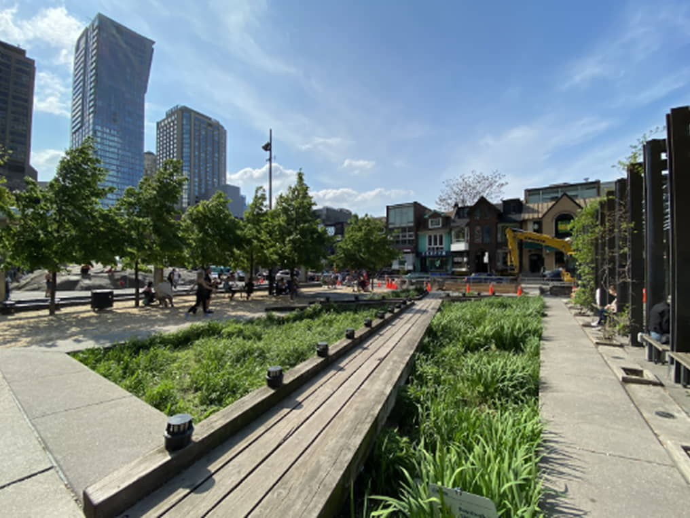

<!--DEV
@ @include('blocks/location-about/location-about.html')
-->

<article class="container  block-m  location-about">
  <div class="row  location-about__row">

    <div class="location-about__col-img">
      <div class="embed-responsive  embed-responsive--4-3  location-about__img">
        <picture>
          <source srcset="img/location.webp,
                          img/location.webp 2x" media="(min-width: 1366px)" type="image/webp">
          <source srcset="img/location.jpg,
                          img/location.jpg 2x" media="(min-width: 1366px)">
          <!-- 540x405, 810x608 2x -->
          <source srcset="img/location.webp,
                          img/location.webp 2x" media="(min-width: 1200px)" type="image/webp">
          <source srcset="img/location.jpg,
                          img/location.jpg 2x" media="(min-width: 1200px)">
          <!-- 491x368, 736x552 2x -->
          <source srcset="img/location.webp" media="(min-width: 1024px)" type="image/webp">
          <source srcset="img/location.jpg" media="(min-width: 1024px)">
          <!-- 690x518 -->
          <source srcset="img/location.webp" media="(min-width: 1024px)" type="image/webp">
          <source srcset="img/location.jpg" media="(min-width: 1024px)">
          <!-- 690x518 -->
          <source srcset="img/location.webp" media="(min-width: 768px)" type="image/webp">
          <source srcset="img/location.jpg" media="(min-width: 768px)">
          <!-- 575x431 -->
          <source srcset="img/location.webp" media="(min-width: 480px)" type="image/webp">
          <source srcset="img/location.jpg" media="(min-width: 480px)">
          <!-- 816x612 -->
          <source srcset="img/location.webp" media="(min-width: 300px)" type="image/webp">
          <source srcset="img/location.jpg" media="(min-width: 300px)">
          <!-- 575x431 -->
          
        </picture>
      </div>
    </div>

    <div class="location-about__col-text">
      <div class="location-about__text">
        <h2>The path to a top quality Bathroom renovation in your Bayview home is smoother than you think</h2>
        <p>Characterized as a student village being so near to several of Canada’s top academic institutes; The University of Toronto, Toronto Metropolitan University and George Brown College. A majority of homes are cycling out tenants annually or bi-annually in sync with the academic year which leads to a lot of wear and tear on residences. Also, many east Asian communities such as Japan or South Korea (which account for a notable amount of our international students) hold strong bathhouse histories and cultures, so a splendidly designed bathroom will likely be appreciated by folks belonging to these demographics in search of housing. Consider refreshing your rental unit with a cost effective modern renovation to compete among the vast listings, attracting affluent scholars and reducing future liability risk.</p>
        <p>Whether that means watching the sunset on Toronto’s iconic skyline while sinking into a roomy freestanding bathtub surrounded by delicate tiling of your most cherished colours against the warm orange sunlight and deep purples of an evening’s sky, Or the subtle dancing shadows of trees between you and the soft morning light falling through the windows of your compact, accessibility minded shower design. We are here to craft your own luxury oasis, by providing high-end modern renovation service.</p>
      </div>
    </div>

  </div>
</article>
